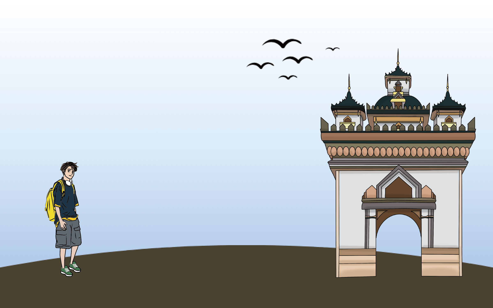

寮國Laos


飲食文化
寮國的飲食習慣受到周邊國家如泰國等的影響，所以當地的菜餚通常偏向辛辣口味
特色食物介紹

寮式糯米粉 Khao Piak Sen
這是一種以糯米製成的米粉，其口感極具彈性；煮熟的米粉會置於濃郁的肉湯中，搭配著肉絲、蔬菜和蔥花；店家常附上檸檬和辣醬，這樣的搭配能增添風味
寮式肉沙拉 Laab
這道菜是被認為是寮國的國菜，也是當地最受歡迎的料理之一
將肉切碎後油炸，搭配薄荷葉、香菜和蔥作為配菜；調味方面使用魚露、辣椒乾、
酸橙汁和醬油等調味料，最後擺盤時會加入生菜和番茄片
在這道菜中，肉類的選擇多種多樣，包括牛肉、豬肉，以及相對特別的鴨肉

鮮脆椰子飯 Nam Khao
有別於寮國常見的糯米料理，它使用香米作為主要成分，將煮熟的香米和紅咖哩醬、椰子絲、薄荷、香草葉等拌在一起，捏成小肉丸的形狀；之後沾上蛋液後放入
油鍋炸至外皮呈金黃色
開飯時，只需將米飯球搗碎，淋上魚露和檸檬汁，再加上花生碎、香腸丁、香菜等拌勻，最後盛裝時可搭配幾片生菜和乾辣椒
豬肉乾/牛肉乾 Muu Haeng/Siin Haeng
這種醃製的方式能夠讓肉類更長久地保存；首先，將肉切成條狀，接著使用
高良姜、魚露、大蒜、辣椒和黑醬油進行醃製；過去會把醃好的肉懸掛在屋頂
曬乾，而現在則通常會放進烤箱烘烤；這樣製作的肉可沾上辣椒蘸醬後享用


寮式烤肉
烤肉、烤香腸和烤魚是寮國的熱門美食；通常，它們會先烤到七、八分熟，然後擺放在香蕉葉上，等待客人點餐後再進行最後的烤熟；如果在這裡買烤肉，通常會提供生菜搭配，例如高麗菜、薄荷、香茅和九層塔等，這樣吃起來更能解膩
特殊節日
寮國是個多元文化國家，有多個不同的文化族群和宗教，有著多樣的文化和宗教節日，讓寮國的文化增添了舉多色彩
特殊節日介紹
潑水節 Songkran
日期：每年佛曆的五月
潑水節在寮國被視為一個歡慶的活動，人們會在寺廟拜佛，同時在家中或街上相互潑水，象徵著清潔和祝福，也希望洗刷走疾病和不幸，迎接豐收的新一年；此外，浴佛、堆沙、抹鍋灰、撒爽身粉等活動也是這個節日的一部分，充滿歡樂和喜悅
火箭節 Boun Bang Fai
日期：每年的6月24日
各村莊以自製火箭比賽向雨神祈禱，將火箭射向空中，希望帶來雨季的來臨；比賽不僅以火箭的高度和美觀為評判標準，也著重於表演性質；每個村莊自成一隊，
他們會穿上不同的服裝，甚至有些人扮成鬼神；在比賽前，村莊之間會互動，享受
喝啤酒、跳舞等活動，讓氣氛熱鬧、歡樂；最後，火箭的高度、外觀和整體表演將
決定誰能獲得冠軍


塔鑾節 Pha That Luang
日期：佛曆每年的12月
這個節日的活動集中在最後三天；在這段時間，僧侶們會從全國各地聚集到塔鑾，他們會集體居住在塔鑾四周的長廊內；除了在特定時間舉行法事和集體詠頌經文之外，他們還會接受信眾的佈施，並為他們進行拴線祈福等儀式；與此同時，市民也會參與傳統的遊行活動；在晚間，人們會點燃蠟燭，在塔鑾周圍進行秉燭繞塔和祭拜等儀式
宗教信仰
寮國的主要宗教是佛教，大多數民眾信奉上座部佛教；除了佛教信仰外，也存在一些民間信仰；寮國的基督徒（包括天主教和新教）佔人口的2%；其他宗教信仰還包括巴哈伊教、漢傳佛教和中國民間信仰；寮國也有少數無神論或不可知論者
儘管寮國政府禁止勸誘改宗，但一些與私營企業有關聯的外國人或非政府組織可能會私下進行改宗傳教活動；寮國建國陣線負責宗教事務，要求寮國的所有宗教組織必須註冊
常見宗教信仰介紹
佛教 Buddhism
佛教從公元八世紀開始由孟族僧侶引入寮國，在十四世紀至今普遍信仰；寮國有近5000座佛寺作為宗教信仰的重點，也是農村社區生活的中心；大多數佛教徒在佛寺中短期出家
民間信仰 Folklore Religion
寮國民間信仰為東南亞的民族宗教，在寮國有30%的人口信仰；寮國民間信仰屬於多神論，並和薩滿教信仰有關